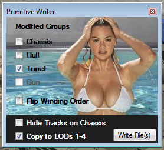

Lets Change Something!
Now that you know you can export and import a tank in to Tank Export and the scaling is correct, it's time to do some editing.
Now that you know how to create a FBX and load it in your 3D app.. DO IT!
Do some simple editing just to get used to a few concepts.
Here is a list of key things you should know.
1. The names of each item is VERY important. DO NOT CHANGE THEM! it will break importing the FBX in Tank Exporter.
2. The helper entries that all the visual markers are layered in to. DO NOT CHANGE ANY OF THIS! you can hide anything you want.
3. You can add lights to the scene. Tank Export ignores these but this is not tested with any app but 3DS Max!
4. Adding models that are not associated with a tank component will make writing a primitive impossible unless they contain "clone" in their name.
5. To associate added geometry to a tank component, add that tank components name to its name. "hull_new_object" for example.
6. UV COORDINATES can mess things up bad! Every vertex must have a UV assigned to it.
7. Cleaning up of dead vertices and UVs is critical. The game will crash if there are more UVs than is expected!
Cleaning up has to be done so often, JLdragon has got his hands on a script for Max that does this in one click. The script and instructions are at the bottom of this page.
8. Vertex Colors control the Chassis and Guns deform in the game. Messing them up can cause unexpected results. There will be more on this in a different process page.
9. Make sure you set the FBX exporter to write TRIANGLES if you created quads or changing things to quads!
So.. With the model loaded in Max, deleted something off the tanks Hull.. Maybe removes all the fender sheet metal polygons.
After you have deleted some things and BEFORE you export the FBX, you must clean up the dead vertices left in the model.
If you don't want to mess with adding a script and button.. these are the steps needed.
1. Add a Unwrap UVW to the stack. You can get to this under Modifiers on the top menu in Max.
2. Add 2 Vertex Paint Modifiers. Set one of them so the Channel is Vertex Alpha.
3. Right Click in the
modifier stack panel and than Collapse all.
After you have cleaned the dead vertices, you can export the FBX.
Don't over write the original FBX! Rename the one you export from Max. I usually just add "_Max" to its name.
Hint: Under Tools on the top menu in Max, there is one called
"Channel Info...". That tool shows a list of Vertices, UVs and other information about the selected object.
Import the FBX in to Tank Exporter. You should see a window popup and close very fast.. This is TE updating the check boxes of what it thinks needs to be written to the primitive file.
On the File/Settings menu, select Write Primitive.
A window will pop up that looks like this:
|  | The girl is Kate Upton. One of the best looking super models there is. If TE found a difference between the data in the FBX and the PKG files, the check box for that component will be checked. Flipping the Vertex Winding Order causes the vertices to be saved in the opposite winding order. Click the Write File(s) under Upton's lovely left breast once you are ready. |
You might get the pop up about extracting if you didn't do it when asked before.. That's fine.. do it now.
Also.. you can extract to res_mods any time after loading a tank. Be aware that TE will NOT overwrite an existing primitive or texture file.
Writing primitive file(s) DOES over write the existing file(s) Extracting does not!
If you want to clear the folder and write fresh unchanged tank data, use the "Remove Tank From res_mods" menu item.
You will need to re-extract that tank to res_mods again before being able to write out a primitive.
Be careful! TE doesn't care about your files when it deletes them.. If you have important work there on textures, BACK THEM UP SOME WHERE SAFE!
I have done my best to prevent Tank Exporter from destroying work you may have preformed on textures. Use "Remove Tank From res_mods" at your own risk!
Once you have written the primitive to the res_mods folder, load up the game and check out your newly edited tank.
If the game crashes, chances are you forgot to clean the dead vertices of one of the parts OR, you have a model that has bad UV mapping.
These pages are not to teach you how to do UV mapping or edit them. It would take a book full of pages to explain all of it.
There is plenty of videos and tutorials on the internet that can help you learn UV mapping and other aspects of model editing.
Getting a good working knowledge of how editing works in Max or any other 3D program is essential to being successful at modding tanks!
|
Adding The Clean Up Script to Max 2017. |